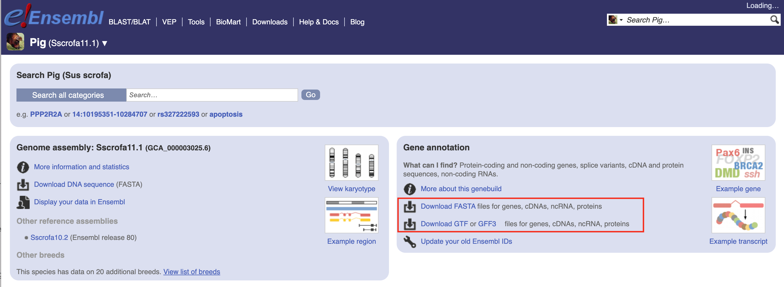

Custom Reference is a feature that allows you to upload your own reference files to the BD Rhapsody™ Pipeline. This feature is useful when you have a custom panel design that is not available in the pre-built references provided by BD.
Reference files from public database
To generate custom reference files compatible with BD Rhapsody Pipeline, you can download the necessary files from Ensembl.

Follow the steps below to retrieve files to generate custom genome:
AbSeq Reference is a feature that allows you to upload your own reference files to the BD Rhapsody™ Pipeline. This feature is useful when you have a custom AbSeq panel design that is not available in the pre-built references provided by BD.
For more information on how to upload your custom AbSeq reference, please refer to the BD Rhapsody Pipeline AbSeq Reference Guide.
this is the right side of the custom reference
this is the right side of the abseq reference